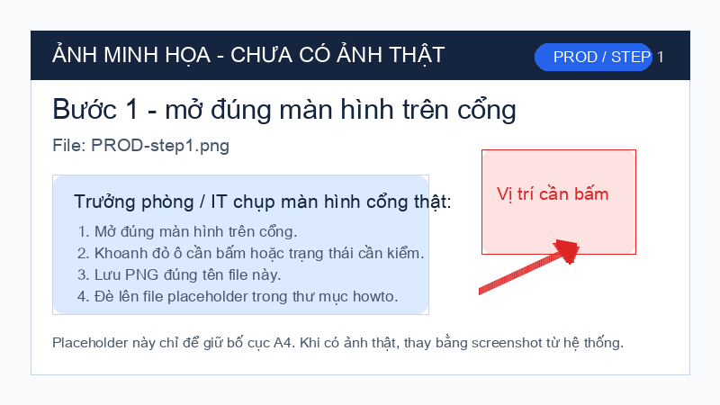
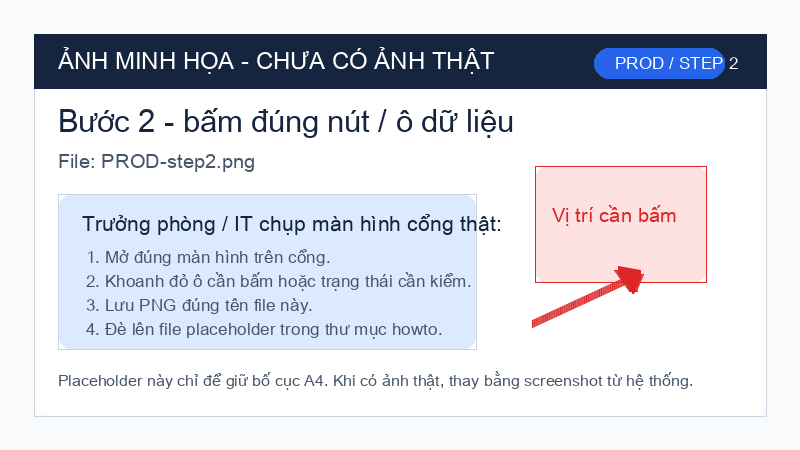
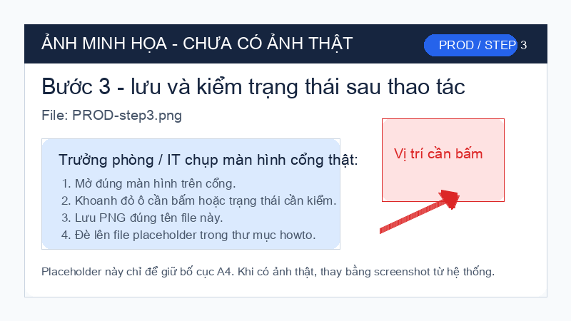

Mục 1. Việc 1: Tổ trưởng đọc lệnh trên cổng trước khi giao máy.

- Bước 1: Tổ trưởng quét QR trên bảng tổ hoặc mở cổng trên máy tính tổ.
- Bước 2: Bấm ô "Lệnh sản xuất", nhập mã lệnh trên phiếu giao việc.
- Bước 3: Đọc bản vẽ, vật tư, FAI, điểm giữ rồi mới giao máy.
Lỗi thường gặp: không thấy mã lệnh. Cách sửa: đổi bộ lọc sang "Đang chạy".
Tôi sai → gọi ai trong 5 phút:
Người dẫn dắt phòng: [đang tải…]
Người dự phòng: [đang tải…]
Quản đốc (nếu không gọi được 2 số trên): ____ (điền tay khi in)
Mục 2. Việc 2: Người vận hành ký FAI trước khi chạy lô.

- Bước 1: Người vận hành mở hồ sơ lệnh và bấm "FAI mẫu đầu".
- Bước 2: Chụp mẫu đầu, nhập kết quả đo, kiểm tên dụng cụ đo.
- Bước 3: Bấm "Ký" rồi chờ trạng thái "FAI đã ký".
Lỗi thường gặp: nút ký bị mờ. Cách sửa: kiểm còn thiếu ảnh hoặc kết quả đo.
Tôi sai → gọi ai trong 5 phút:
Người dẫn dắt phòng: [đang tải…]
Người dự phòng: [đang tải…]
Quản đốc (nếu không gọi được 2 số trên): ____ (điền tay khi in)
Mục 3. Việc 3: Tổ sản xuất báo lỗi vào mục Vấn đề.

- Bước 1: Mở mục "Vấn đề" ngay trên hồ sơ lệnh sản xuất.
- Bước 2: Chọn máy, mã lệnh, mức lỗi và chụp ảnh hiện trường.
- Bước 3: Bấm "Gửi", đọc lại người nhận và hạn xử lý.
Lỗi thường gặp: gửi xong không thấy phiếu. Cách sửa: mở tab "Của tổ tôi".
Tôi sai → gọi ai trong 5 phút:
Người dẫn dắt phòng: [đang tải…]
Người dự phòng: [đang tải…]
Quản đốc (nếu không gọi được 2 số trên): ____ (điền tay khi in)
Mục 4. 5 sự cố mong đợi tuần đầu
| Triệu chứng | Nguyên nhân | Tôi tự xử | Tôi PHẢI gọi |
|---|---|---|---|
| Quét QR không ra tài liệu | Mã QR chưa kích hoạt | In lại từ ANNEX-118 | Tôi PHẢI gọi: IT trực — ______ |
| SOP-501 mở chậm > 10 giây | Mạng tổ kém | Đứng cạnh thiết bị mạng tổ | Tôi PHẢI gọi: Trực kỹ thuật — ______ |
| Cổng yêu cầu đăng nhập khi quét QR | Phiên đăng nhập hết hạn | Đăng nhập lại | Tôi PHẢI gọi: Tự xử, báo người dẫn dắt nếu còn lỗi — ______ |
| Phiên bản bản vẽ trên máy khác cổng | Cập nhật chậm | DỪNG MÁY | Tôi PHẢI gọi: Người dẫn dắt — ______ |
| FAI ký số lỗi | Ứng dụng lỗi | Xuất giấy ký + quét | Tôi PHẢI gọi: IT trực — ______ |